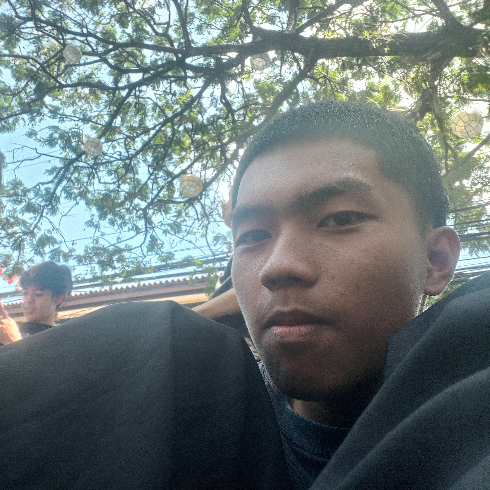
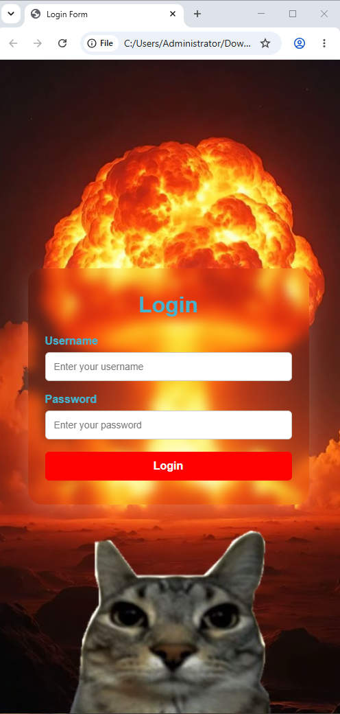
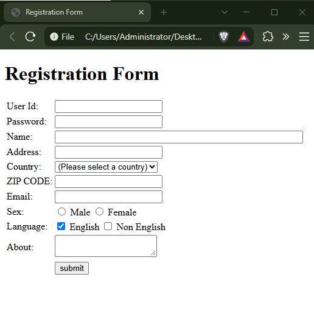

HTML CODING
Can create simple webpages using headings, lists, forms, links, and inputs.
MY PORTFOLIO
An ACT student who has different hobbies, likes learning, interested on creating things, and turning ideas into something meaningful.

01 / INTRODUCTION
I'm a ACT / 2nd year student who likes having different types of hobbies, enjoys learning new things and building my skills one at a time.
I really enjoy being isolated. No one knows what's going on in my life, and I'm happy keeping it private. I also have a lot of interests that no one knows about. For example, I have a plant that I found on the side of the road. Right now, I'm learning about crypto trading. Lastly, what I want in life might sound delusional, but I know it's achievable.
02 / WHAT I CAN DO
A few things that i have, learning and improving.
Can create simple webpages using headings, lists, forms, links, and inputs.
Breaking tasks into clear, manageable steps.
Sharing ideas and working with others.
Giving all my attention and focus on getting the job done to be more efficient.
Exploring different ideas and approaches.
03 / SELECTED WORK


04 / GOALS
Learn beyond school, explore new fields, and build skills through consistent practice.
Improving my technical skills while exploring programming, technology, and learning more about web developing.
Learning independently, staying consistent, and building toward long-term independence.
05 / LOOKING FORWARD
I want to reach my full potential, gain experience,and keep developing my skills on everything, I want to be one of the greats.
06 / SAY HELLO
Have a question or want to work together? Feel free to reach out.